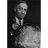
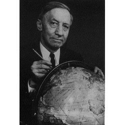
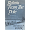
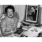
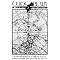
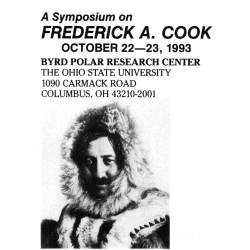
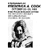

| |
|
|
|
|
|
|
 |
 |
 |
|
 |
|
 |
 The favorable impression of Cook’s text, along with an
extensive introduction by Frederick A. Pohl, inspired a vigorous
campaign
by Cook’s daughter which resulted in the
establishment in 1957 of The
Frederick A. Cook Society as a non-profit in the State of New
York. The
society’s purpose was to gain official recognition for Cook
and his accomplishments.
The favorable impression of Cook’s text, along with an
extensive introduction by Frederick A. Pohl, inspired a vigorous
campaign
by Cook’s daughter which resulted in the
establishment in 1957 of The
Frederick A. Cook Society as a non-profit in the State of New
York. The
society’s purpose was to gain official recognition for Cook
and his accomplishments.In 1961, Andrew Freeman’s pioneering biography of Cook, The Case for Dr. Cook,
was released,
raising still more
interest. Other books on Cook followed, but none equaled
Freeman’s
effort, though they kept Cook’s story alive.For years, the doings of the Cook Society were very low key, though it did establish a small museum in Hurleyville, New York. Things changed in 1983,
when a
blatantly pro-Cook made-for-TV
film got wide attention. Then, when Cook’s
granddaughter, Janet Vetter,
suddenly died in 1989, her will bequeathed a significant trust to the
society’s
purposes. With its generous trust, Cook Society officers expanded their
efforts
and managed to arrange a credible symposium examining Cook’s
career
at Ohio State University, though it added no new evidence that Cook had
reached the Pole.  |
 |
Robert
Bryce’s Cook and Peary,
the Polar Controversy, Resolved, found that the evidence in
Cook’s papers
showed that Cook’s claims of climbing Mt. McKinley and
reaching the North
Pole were fabrications. Although the Cook Society worked
cooperatively
with Bryce and gave him permission to quote from Cook’s
papers, which they
control, they attacked the book’s conclusions as false and
written to a planned
agenda. The openness the society seemed to be moving toward
with its
symposium quickly degenerated to an unwillingness to discuss any
unpleasant
facts contained in Cook’s papers, and actually resulted in a
suppression
of anti-Cook evidence controlled by the society, such as key
photographs
and negatives taken by Cook on his 1906 McKinley attempt, including a
very
sharp original of his picture of Ed Barrill on "McKinley’s
summit.”
The uncropped picture proved that it was instead taken atop
“Fake Peak,”
a tiny hillock by comparison, just as Belmore Browne had said in
1910.
The publication of another, inferior quality version, of this picture
in
the New York Times in 1998 put an end to many of
Cook’s pretensions in the
general public’s mind. The publication of Cook and Peary set off a flurry of interest in The Polar Controversy. Two documentary films produced between 1998 and 2000 took a negative view of Cook’s polar claim, and another on Mount McKinley dismissed Cook’s climb as fraudulent. Nevertheless, despite the overwhelming documentary evidence that Cook lied about McKinley and the Pole, the Polar Controversy will no doubt simmer on forever, because, in the end, people believe what they want to believe and what they wish to believe, no matter what the evidence says to the contrary.
| «- Cook at Leavenworth | Cook's reputation -» |